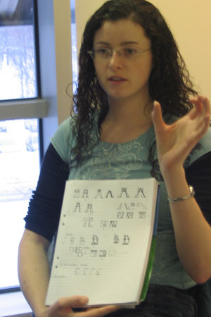
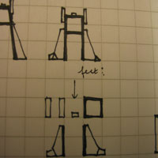
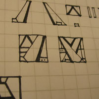

Eileen Dunne eileen_dunne@vodafone.ie
Font: Machination

Monday 24 January
AI. Robots. Transformers.
A typeface that can transform itself from one letter into the next letter or one word into the next word.
Fonts are made up of dots/squares. Brake it up into parts. Consider legibility.
Dot Matrix fonts.
The idea is more about adaption than about the basic design.
REACTIONS Lucas: How could you make that visible in a fixed font? It is an experimental workshop, of course. Frederik: Transformers change for a reason. What is your reason?
Tuesday 25 January
I am still struggling with the technical possibilities of the font, but as Frederik pointed out, should focus more on the conceptual and formal idea than the actual technical side. Given that, here are my two ideas:
1. The Spy Idea
When you look at it, you get information, and there is other information concealed behind it. (The "spy" idea)
2. The Transformers Idea
What are the reason why Transformers transform? Because they have to hide from humans. The purpose of typo is to be clear. Create a font that obscures its own meaning. If you "do the right thing" you reveal the real message.
I need to really focus on clarifying the idea, and then the actual structure, how it works.
Wednesday 26 January
|
 |
The transformers idea has transformed a bit since yesterday, moving from one typeface into two typefaces. Structurally, the letters still have a bit of the real Transformers in them, but they also have a second form, more as a block. The block is actually a transformer that is compacted into a square, with all the parts neatly folded inside. Once you can make the transformers feel comfortable (or annoy them), they will open up and reveal their true meaning. The way you see that the blocks are actually living mechanics, they all have some tiny glimmer of intelligence: a blinking light somewhere, a glitter in their hidden eyes, hidden deep within the block...   |
Friday 28 January
Machination
First letter took a lot of time, because there were a lot of decisions I had to make.
Certain strokes are exaggerated to pick out the form of the letter.
The small shape is physical consequence of the big form.
NAME Means high-level economy devious economy thinking machine / nation green: the thought process
already thinking about the animation for next week. Lot of work, probably in Flash. Could make it look technical.
Lucas: You could also make fun of it.
I would like to animate it.
I would like it to move
Robots in their forties.